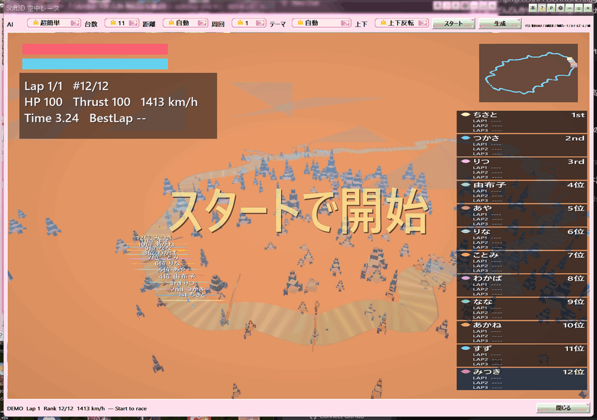

メディアプレイヤー下段の「レース」ボタンから開ける、空を飛ぶレースです。光の帯（パワーバンド）に沿って進み、AIの相手と順位を競います。こちらも迷路と同じく、音楽を聴きながらの息抜き用のおまけです。

Soft3D 空中レース
| 操作 | 働き |
|---|---|
| マウス移動 | 機体の向き（ヨーとピッチ） |
| 左ボタン | 加速 |
| 右ボタン | ブレーキ |
| ホイール | ズーム |
| 中ボタン | 後方を見る |
ゲームパッドにも対応しています。左スティックで操舵、RT または A で加速、LT または B でブレーキ、ハットで代わりの操舵、右スティックでカメラの位置をずらせます。
マウスやパッドの上下を逆にしたいときは、Y（上下）のコンボで「上下反転」を選んでください。設定は保存されます。
ライセンスフリーの写真テクスチャ50枚（256）をexeに埋め込んでいます。地面はテーマ写真に細部を重ね、水面・機体・空の雲カードとキューブも写真です。反射と乱反射があり、アイテムは結晶球です。exeの横に別ファイルは置きません。
これらの設定は保存されるので、次に開いたときも同じ条件で始められます。
エンジン音に加え、スタートのカウントとGO、LAP通過、ゴール、表彰式、コースアウト、アイテム取得、衝突、逆走もその場でPCM合成します。アクセルを踏むとエンジンの音程と重低音が上がり、機体ごとに音色が違います。距離で左右と大きさが変わります（DirectSound 3D に近い定位）。曲の再生バッファには混ぜないので、BGMはそのままです。右クリックの「表示・視点」から切ることもできます。
ステータス部分や画面の枠を右クリックすると、リスタート、コース再生成、ミニマップの表示、アイテムの種類などを選べます。ビューの上では右ボタンはブレーキになるので、メニューを出したいときはステータス側を右クリックしてください。
カメラは左右も上下も少し遅れて追いかけるようになっていて、3D酔いを抑える作りになっています。急坂では視点が徐々に下から見上げるようになります。地形はテーマごとに丘・谷・川があり、光帯は木や地表にめり込んで通れる隙間を抜けます。巨大な山はトンネルで通ります。
おまけ：Soft3D迷路 と同時には開けません。DirectX 11 が使えない環境では起動できません。